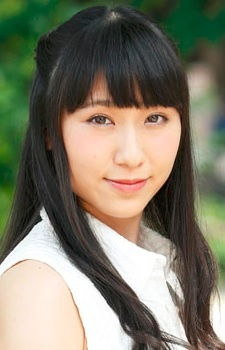

Chiaki Omigawa is a japanese actress and seiyu. Her debut role was in Soul Eater.
- Gender: Female
- Birthday: November 11, 1989
- Hometown: Kanagawa, Japan
- Agency: Hirata Office

|  |
Chiaki Omigawa is a japanese actress and seiyu. Her debut role was in Soul Eater.
|
|---|
 |
Maka Albarn |
|
Maka Albarn is Soul's meister. She more level headed and the brains of the two. She tries to think of away to beat their opponent by using their weakness. Her mother was one of the greatest scythe meister. She hates it when Soul does something perverted. |